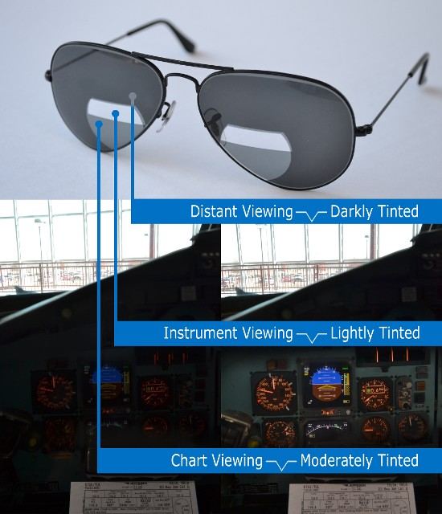

| |
The Problem
As a pilot, you often fly in stark visual
environments with extreme contrast and glare. The
bright region of space in front of you often
requires your eyes to adjust to an enormous decrease
in brightness when you glance down to view the
instruments and reading material.
What Causes Contrast?
Contrast in a jet cockpit is caused by the
difference between the bright outside light and the
relatively dim instrument panel. The eyes primarily
adapt to the bright outside light, so the instrument
panel can be too dim to see. There can also be
significant contrast between the dim instrument
panel and brighter reading material.
What Causes Glare?
Glare occurs when the lens of the eye scatters
bright outside light when viewing the dimly lit
instruments. This scattering creates an illumination
that makes the instruments difficult to see. Reading
material, usually brighter than the instruments, can
also contribute to glare.
Why Do Skysight® Sunglasses Work
Better Than Other Sunglasses?
Conventional sunglasses have
uniformly tinted lenses, and pilots typically wear
darkly tinted lenses to compensate for the bright
outside light. These sunglasses evenly reduce light
from regions outside and inside the aircraft, so
evenly tinted dark lenses may make the instrument
panel too dark to see. Skysight® lenses
have three distinct viewing areas: outside, the
instrument panel, and reading material. Each area is
separately tinted with a density that optimizes
viewing conditions for its region.
Gradient sunglasses are tinted dark
at the top and light at the bottom. These sunglasses
are well suited for activities on or close to the
ground because the gradient tint compensates for the
change in brightness from the sky to the ground.
However, these sunglasses are not optimally suited
for flying because the pilot has to view into
relatively uniform bright outside light and then
view a dim instrument panel. Pilots often find these
sunglasses to be insufficiently dark for outside
light, too dark for the instruments, and, again, not
dark enough for reading material. These sunglasses
also do not compensate for the contrast between the
outside light and instrument panel because they
don't allow for the sharp change in brightness
between these two regions. In addition, gradient
sunglasses do little to mitigate glare because they
allow too much outside light to enter the pilot's
eyes when viewing the instrument panel. Skysight®
lenses overcome contrast and reduce glare by their
dark tint in all areas except those areas used to
view the instrument panel and reading material
|
|

|
Without Skysight®
Glare-Reducing Sunglasses
|
With Skysight®
Glare-Reducing Sunglasses
|
|
|
How Can Skysight® Sunglasses
Help You?
Our patented tri-tinted pattern uses
different tints to balance the light from
and for three distinct viewing regions: dark
tint for outside, light tint for the
instruments, and moderate tint for reading
material.
|
|
|